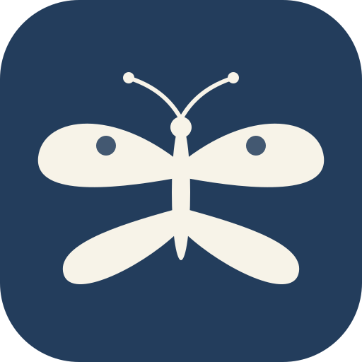

Variante A – in Safari (am einfachsten):
Variante B – in einem anderen Browser (Chrome, Google-App, Instagram …):
Tipp: Den Link findest du auch über fauna.mibaso.de in der Suchmaske.
Nicht mehr anzeigenIn Chrome:
Tipp: Oft blendet Chrome unten von selbst „Fauna Mibaso installieren" ein – dann reicht ein Tipp darauf.
Nicht mehr anzeigen